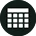
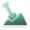
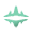

Loading manifest...
Home hub for saved items and empire setup. Search results will auto-switch to the relevant module tab.
Original STT by bipedalshark, parser/work by BloodStainedCrow.
Astral Rift module placeholder.